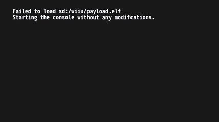
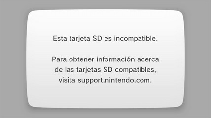
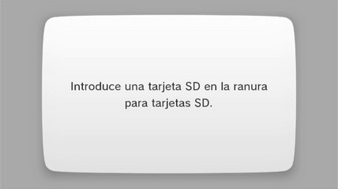
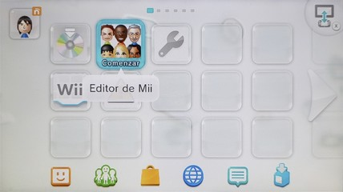
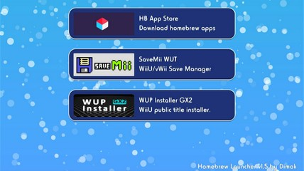
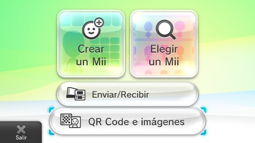
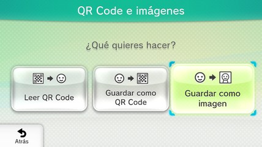
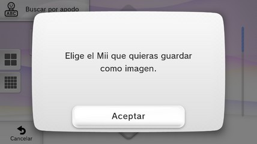

Como revisar que la Wii U detecta la tarjeta SD
La tarjeta SD debe estar formateada en FAT32 para que la consola pueda detectarla.
En caso de tener Autobooting PayloadLoader la Wii U muestra este mensaje cuando enciende y no detecta la tarjeta SD:

Instrucciones
- Con la consola apagada introduce la tarjeta SD en el puerto SD de la Wii U.
- Enciende la consola, accede al menú de Wii U y abre el Editor de Mii.
- Si cargó el Homebrew Launcher entonces la consola está detectando la tarjeta SD, no importa si no aparecen aplicaciones en el Homebrew Launcher. Presiona el botón HOME del GamePad de la Wii U y luego toca en Salir para regresar al menú de Wii U.
- Si no cargó el Homebrew Launcher no te preocupes (ese escenario sólo ocurre con Tiramisu correctamente configurado). Dentro del Editor de Mii toca en QR Code e Imágenes.
- Toca en Guardar como imagen.
- Si la consola te deja elegir un Mii para guardarlo como imagen entonces la consola está detectando la tarjeta SD.
- Si la consola te indica que la tarjeta SD es incompatible entonces la consola sí está detectando tarjeta SD, pero la tarjeta SD no está formateada en FAT32.

Quédate en esta pantalla, expulsa la tarjeta SD, formatea la tarjeta SD en FAT32 y luego vuelve a introducir la tarjeta SD en la Wii U. Si formateaste correctamente en FAT32 entonces el mensaje debe a cambiar al de elegir un Mii para guardarlo como imagen. - Si la consola te pide introducir una tarjeta SD entonces la consola no está detectando la tarjeta SD.

Quédate en esta pantalla, expulsa la tarjeta SD y prueba con las siguientes recomendaciones: - Limpia los contactos de cualquier partícula de polvo o pelusa. Si tienes aire a presión úsalo. Para una limpieza más profunda no uses agua, usa alcohol isopropílico y espera a que se evapore.
- Si estas usando una tarjeta microSD con adaptador prueba con otro adaptador. Algunos adaptadores de microSD a SD funcionan bien en PC, pero luego esos adaptadores no funcionan bien en la Wii U.
- Vuelve a introducir la tarjeta SD en el puerto SD de la Wii U, si el mensaje que te pide introducir una tarjeta SD cambia al de elegir un Mii para guardarlo como imagen entonces lograste que la consola detectara la tarjeta SD. Toca en Cancelar, Atrás y Salir para regresar al menú de Wii U.
- Si no logras que la consola detecte la tarjeta SD entonces vuelve revisar que esté formateada en FAT32 o prueba con otra tarjeta SD, si aun así ninguna tarjeta SD es detectada por la consola entonces es posible que el puerto SD de la Wii U se encuentre dañado, en ese caso debes llevar la consola con un técnico para que la revise.




